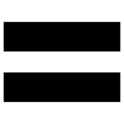
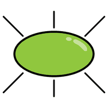
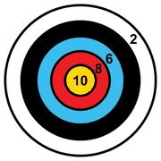
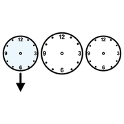

Modulo 3, fondamenti
Il modello SAMR
Quattro livelli per capire che cosa cambia davvero quando portiamo la tecnologia in classe, e quando invece non serve.
nessun cambio
di processo
Sostituzione
 libro
libro tablet
tablet
ugualeLa tecnologia sostituisce una pratica tradizionale, senza cambiarla. Fa risparmiare tempo e spazio ed è un primo contatto con gli strumenti.
- Scrivere al computer invece che a mano.
- Quiz online al posto di quelli su carta.
- La scheda in PDF condivisa invece delle fotocopie.
- La lavagna interattiva al posto di quella in ardesia, salvando il lavoro.
Se la tecnologia aggiunge solo complicazioni, meglio carta e penna.
Aumento
 scrivere
scrivere computer
computer più
piùLa tecnologia aggiunge qualcosa oltre la comodità: chiarisce un argomento o lo rende più coinvolgente, e rende lo studente più autonomo.
- Esposizioni accompagnate da presentazioni multimediali.
- Ricerche autonome in rete.
- Programmi che trasformano i contenuti in gioco e mostrano i progressi.
- Un video che chiarisce un concetto difficile.
qui inizia
la trasformazione
Modifica
 cambiare
cambiare lavorare insiemecomputer
lavorare insiemecomputerL'attività viene riprogettata e va oltre i limiti dell'aula: collaborazione su documenti condivisi, lavoro tra pari, prodotti che non si fermano alla carta.
- Podcast che riassumono un argomento e diventano materiale di ripasso.
- Un video al posto dell'interrogazione orale.
- Google Earth per rendere concreti misure e geografia.
Ridefinizione

nuovo video
video mondo
mondoLa tecnologia rende possibili attività prima impensabili, collegate al mondo reale.
- Mettere la classe in contatto con persone di altri paesi.
- Pubblicare online i lavori per la comunità.
- Videoregistrare un'esposizione per rifletterci insieme.
- Produrre documentari, cortometraggi, pagine web.
le domande
da farsi prima
Prima di tutto, lo scopo

obiettivo pensare
pensare
primaPartire dallo scopo evita la tecnologia fine a se stessa. Prima di scegliere, chiediti:
- Che cosa voglio ottenere?
- Che differenza farà per l'apprendimento?
- Perché potrebbe essere meglio non usarla?
- Io e la classe siamo attrezzati?
- Quanto tempo posso investire?
Non serve ridefinire sempre: a volte una piccola aggiunta a una strategia che funziona è tutto ciò che serve.